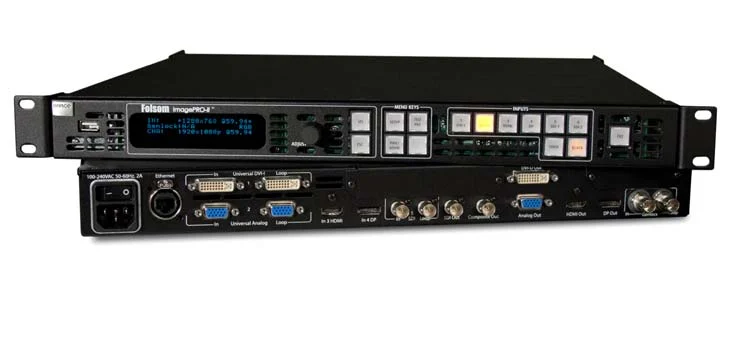
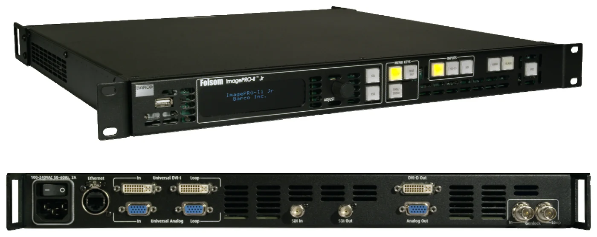

どこを見せる？
映像の一部を切り出すか、全体を画面に合わせるかを整理。
映像をつなぐ・整える ↗EQUIPMENT / 14
映像スケーラー
映像の大きさと形式を、出力先に合わせる。
KEY SPECIFICATIONS
 画像を大きく見る ＋
画像を大きく見る ＋01 / ROLE & FLOW
実際の配線・端子構成は案件に合わせて決めます。
02 / BEFORE YOUR BRIEF
映像の一部を切り出すか、全体を画面に合わせるかを整理。
HDMI・DisplayPort・SDIと、解像度・色形式を合わせる。
同じ映像か別の調整が必要か、送り先ごとに共有。
03 / CHOOSING THE RIGHT TOOL
LEDやプロジェクターへ渡す映像のサイズ・形式を整えたり、表示する領域を切り出したりする用途に。
Aquilonのような多層の番組合成機とは役割が違います。4K60pの色形式とビット深度は接続端子によって変わります。
HDMI 2.0の4K60p 4:4:4は8bit、DisplayPort 1.2では同10bit、12G-SDIでは4:2:2 10bitに対応します。ImagePRO-IIやII Jrとは別機種です。カードは通電したまま抜き差しせず、必要な構成を事前にそろえます。
入力と出力の形式、端子、切り出す範囲、画面数、信号距離、調整担当をお聞かせください。本体・周辺機材・搬入出・設営・本番操作・撤去を分けて、必要な範囲を整理します。
04 / RELATED EQUIPMENT
 見る ↗映像フォーマット変換
見る ↗映像フォーマット変換異なる映像形式を、受け側の機材に合わせる。
メーカー製品画像：Teranex AV 見る ↗マルチスクリーンプロセッサー
見る ↗マルチスクリーンプロセッサー複数の画面を、ひとつの演出として組み立てる。
メーカー製品画像：Aquilon C+
見る ↗映像スケーラー・信号変換映像機器と会場の画面を、つながる形式へ。
メーカー製品画像：Barco ImagePRO-II
見る ↗映像スケーラー・信号変換DVI・アナログ・SDIの映像を、表示先に合わせる。
メーカー製品画像：Barco ImagePRO-II Jr 見る ↗HDMI出力カード
見る ↗HDMI出力カード対応プロセッサーから、複数のHDMI画面へ。
メーカー製品画像：R9004792の出力端子面。